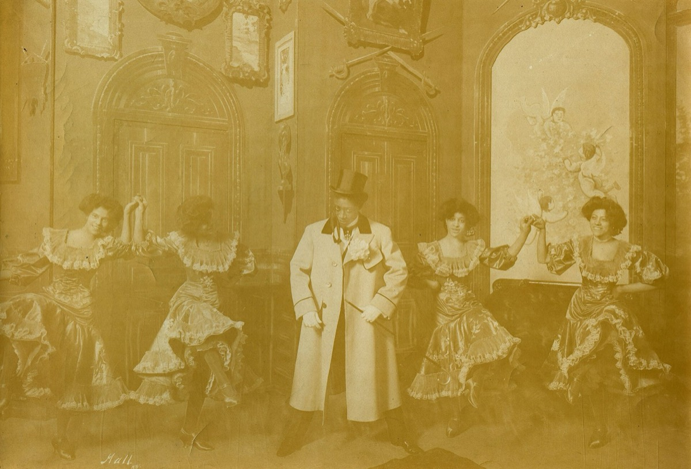
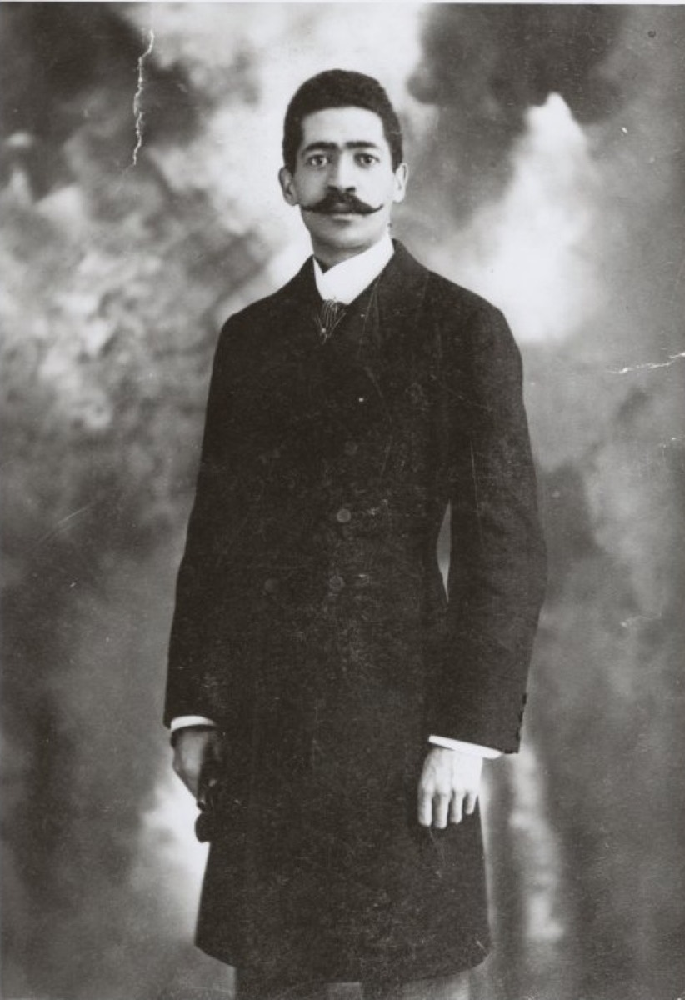

Chapter one
The audition on the roof.
Clorindy opens on the Casino Theatre roof in July, with words by Paul Laurence Dunbar. A fourteen-year-old Abbie Mitchell climbs the stairs. Cook hires her at thirty dollars a week.
Read the prologue
In Dahomey on tour, Seattle, 1905. Public domain.
A novel based on a true story
The Life and Times of Abbie Mitchell and Will Marion Cook
Jacques Cook · Antoinette Cook Bush · Penny Daniels
In the summer of 1898, a fourteen-year-old soprano climbed to the roof of the Casino Theatre to audition for the most arrogant man on Broadway. He hired her for thirty dollars a week. What followed was a marriage, a musical revolution, and a story their own family did not know until they found it in a box.
The story in five chapters

Chapter one
Clorindy opens on the Casino Theatre roof in July, with words by Paul Laurence Dunbar. A fourteen-year-old Abbie Mitchell climbs the stairs. Cook hires her at thirty dollars a week.
Read the prologue
Chapter two
In Dahomey opens on Broadway with Williams and Walker, then sails to London. The company performs at Buckingham Palace. Abbie sings. She is nineteen.
The Diva
Chapter three
The marriage ends. Abbie builds a concert and theatre career on both sides of the Atlantic. Cook conducts and organizes through the war years.
The Maestro
Chapter four
Cook takes the Southern Syncopated Orchestra to Europe, plays for King George V, and introduces Europe to Sidney Bechet. In Harlem, he will teach a young Duke Ellington.
The timeline
Chapter five
Abbie creates the role of Clara in the original Porgy and Bess. She outlives her husband by sixteen years and champions his music to the end. Decades later, a box is found in a house.
The BoxListen
Sousa's Band recorded a Clorindy number in October 1900, two years after the show opened on the Casino roof. A seven-inch record, so it runs under a minute and a half.
"You have a glorious voice, little girl, plenty of fire, but you can't sing a damn thing!"Will Marion Cook to Abbie Mitchell · July 12, 1898 · From the prologue